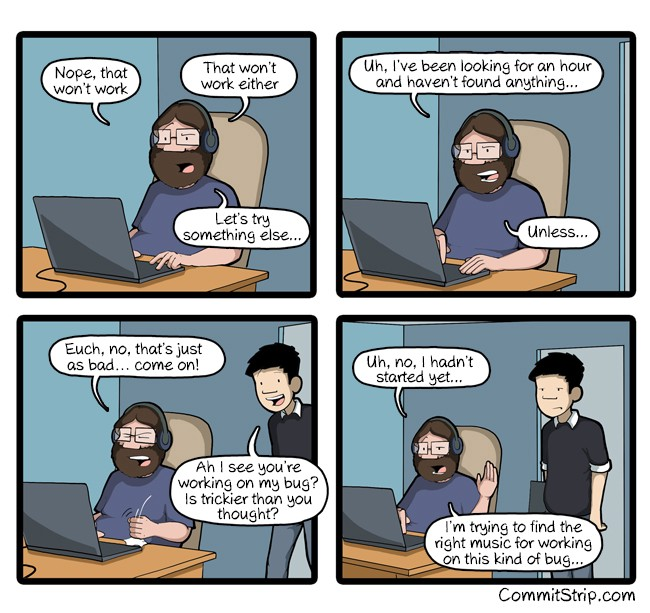

Программирование и музыка
Предисловие⌗
Наушники — лучший друг разработчика (спасибо открытым пространствам и людям вокруг). Шум и разговоры отвлекают от работы и не дают сосредоточиться. Решением являются отдельные комнаты для небольших команд (что встречается редко и все равно не является стопроцентным, потому что отвлекать может и просто клацание коллегами по клавиатуре) либо наушники плюс музыка в них. Также у музыки на работе есть и другие преимущества. Например, она может выступать в роли якоря. Важные события могут вводить человека в определенные состояния, которые могут завязываться на какие-то внешние вещи — например музыку, которая играла в тот момент. Тогда песня становится своеобразным якорем и в следующий раз услышав её человек может вернуть себя в то состояние. Поэтому песни, которые слушаешь на работе, становятся “рабочими” песнями. Услышав их вне работы можно случайно перейти в рабочий режим.
Я люблю музыку, но слушаю вне работы её очень редко. Музыка на работе играет постоянно и в целом в конце дня просто от нее устаешь. В то же время на работе музыку я слушаю и для того, чтобы не слышать, что происходит вокруг, и чтобы настроить себя на рабочий лад. У меня нет чётко выраженных музыкальных вкусов — я слушаю все подряд под настроение. Поэтому стриминговые сервисы с как будто бы умным подбором музыки — мои лучшие друзья. Их цель помочь мне подобрать исполнителя, который мне подходит по настроению прямо сейчас. После этого можно просто включить альбом этого исполнителя и слушать на повторе возможно весь день. Также я заметил, что работать лучше всего под иностранную музыку, слова которой ты не знаешь. Либо под русские песни, в которых мало смысла. В общем, слова не должны отвлекать. Музыка не должна очень нравиться, потому что иначе есть шанс, что она будет сбивать, потому что захочется уловить какой-нибудь интересный момент.
Если же на работе возникают какие-то особые ситуации (надо максимально сконцентрироваться, чтобы найти причину ошибки, нужно наоборот войти в прострацию, чтобы написать тесты и т.д.), то в ход идёт точечный подбор композиций для работы. Далее будет именно про примеры композиций для работы и особенных ситуаций. Я очень плох в определении жанров, поэтому разбил на четыре категории: Dubstep, Rock/Alternative/Pop, Hip-Hop, Русский Рэп

Dubstep⌗
Дабстеп — это универсальная музыка для работы. С одной стороны эта музыка может тебя погрузить чуть ли не в астральное состояние своими свистелками и жужжалками, с другой стороны все эти высокие пищания, возможно, напоминают мне по звуку работу каких-то механизмов, что помогает мозгу сконцентрироваться и работать примерно как какая-то машина.
Конечно, такую музыку лучше не слушать долго, потому что мозг по ощущениям просто изнашивается, поэтому я использую дабстеп когда хочу углубиться в проблему и отстраниться от всего вокруг.
Из исполнителей тут есть очевидные: Skrillex, Yellow Claw, Knife Party, Diplo, Prodigy (да, я знаю, что Prodigy — это не дабстеп, но я же предупреждал, что я слаб в жанрах). Есть и просто случайно услышанные песни, которые попали в избранное и так там и остались: Bassnectar — Sideways Nightcore — Monster
Отдельно отметил бы **Borgore — Kiss My Lips. **Это что называется тяжелая артиллерия на самые исключительные ситуации. Когда ты злой как черт и думаешь “Так, баг, тебе п*зда”. После прослушивания обязательно включить что-нибудь расслабляющее вроде Massive Attack.
Rock/Pop/Alternative⌗
Эта группа самая неопределенная, как можно заметить из заголовка. В целом её можно было бы описать как “иностранная музыка, которая не хип-хоп и не электронная”.
В зависимости от исполнителя такая музыка может выступать как фон для повседневной работы так и в качестве спецоружия.
Список исполнителей в этой группе обширен (как и мои музыкальные предпочтения):** Rob Zombie, Marilyn Manson, Limp Bizkit** (ну это возможно немного хип-хоп, но вы помните про то, как я определяю жанры), **Linkin Park, Green Day, Bloodhound Gang, Korn, Billy Talent, Gorillaz, Die Antwoord, Slipknot, Rage Against the Machine, Twenty One Pilots, Sum 41 **etc. Все эти группы в большинстве своем относятся к бодрой фоновой музыке.
Что касается музыки специального назначения, то тут отметить хочется намного больше композиций (но чтобы не спамить буду себя сдерживать)
Static-X — The Only Это саундтрек к NFS: Underground. Возможно якорь концетрации был заложен ещё тогда, играя за компьютером, и услышав эту песню годы спустя внутри что-то откликнулось.
Ну и ударные хороши.
**Rise Against — Savior **Песня с приятным ритмом и надрывным вокалом.
Слова конечно немного сопливые, однако, как мы помним на работе мы слова не слушаем.
The Devil Wears Prada — Hey John, What’s Your Name и другие песни данной группы. Это ядерное оружие. Преимущество данной группы в том, что у них два вокалиста — один с приятным голосом, а другой с гроулом. И гроул-вокалист может просто кричать, доводя мозг до максимальных перегрузов, и когда кажется, что от концентрации и напряжения мозг лопнет — вступает вокалист с приятным голосом и разгружает. Это повторяется один раз, второй, третий — и каждый раз происходит дополнительно некоторая эмоциональная накачка. Больше двух песен без подготовки слушать не рекомендуется.
Hip-Hop⌗
Здесь есть две подгруппы — старая и новая школа.
Хип-хоп старой школы — это вообще лучшая музыка для повседневной работы. Простые зацикленные ритмы максимально совпадают с любой монотонной работой, которая есть: чтение документации, поиск чего-либо в интернете, написание кода. Для таких целей я даже собрал себе отдельный плейлист из лучших хип-хоп композиций для обычного скучного спокойного рабочего дня.
Поскольку я слушаю музыку на Deezer, то и плейлист там же. Это не реклама, самим сервисом я пользуюсь в бесплатном режиме. $8 в месяц, я считаю, многовато по сравнению с конкурентами (но зато у конкурентов не такой хороший бесплатный режим). Чтобы прослушать в плейлисте что-нибудь без ограничения в 30с надо быть залогиненым в Deezer.
Хип-хоп новой школы тоже хорошо подходит для повседневной работы. Часто это незамысловатые мотивы и слова с довольно сомнительным смыслом — то, что надо для работы! Ну и конечно трещание хай-хетов. **Lil Peep, XXXTENTACION **— вот это вот всё.
Как пример Lil Peep — Benz Truck.
Это для спокойной работы.
XXXTENTACION — Look At Me!
А это для фикса багов.
Русский рэп⌗
Русский рэп весь очень разный. Применяется чаще всего как и хип-хоп для повседневной работы.
Если разделять на группы, то можно было бы выделить следующие:
- Rock/Rap —** Noize MC, Anacondaz**
- “старая” школа — Гуф, Каста etc.
- новая школа — Скриптонит, ЛСП, Big Russian Boss etc.
- не знаю что — 2H Company, Кровосток, ATL, MiyaGi & Эндшпиль
Отдельного уважения от меня получает 2H Company. Музыка очень плохого качества и быстрый поток сознания в тексте. Шикарно!
Внимание: слушайте на свой страх и риск.
У **ATL **много приятных песен — Марабу, Демоны. Для достижения максимального эффекта лучше всего слушать в дождливую погоду (хех).
Что ещё?⌗
Знаю людей, которые предпочитают работать под классическую музыку или под ambient. Я и сам не прочь взять например Баха и исправить какой-нибудь заковыристый баг:
Но у такой музыки есть недостаток, что она спокойная настолько, что сквозь музыку все равно слышишь, что происходит вокруг (надо просто купить уже себе наушники с шумоподавлением).
Заключение⌗
Как-то так выглядит музыка, которая помогает мне работать. Пролистав свой список избранного выделил некоторые песни в отдельный плейлист (конечно там далеко не все — ведь самое главное — это найти исполнителя под настроение, чтобы потом уже переключиться на него) - playlist
На этом у меня всё.
А под какую музыку работаете вы?